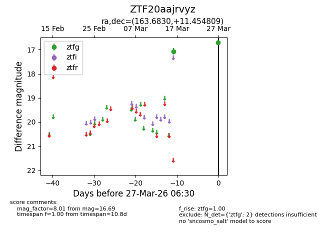
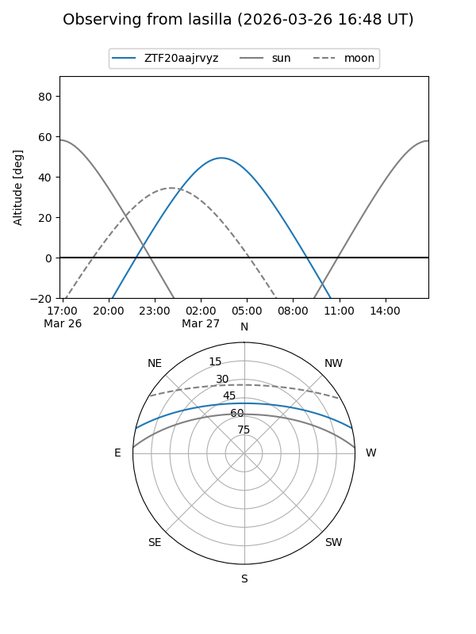
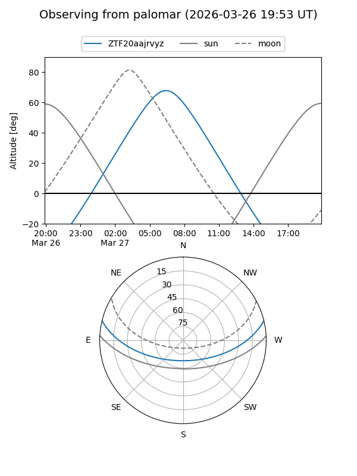

ZTF20aajrvyz
Target ZTF20aajrvyz at 2026-03-27 06:33
Aliases and brokers:
FINK: link
Lasair: link
ALeRCE: link
alt names
ZTF20aajrvyz (ztf,fink_ztf)
Coordinates:
equatorial (ra, dec) = 163.6830,+11.45481
equatorial (HMS+DMS) = 10:54:43.93,+11:27:17.31
galactic (l, b) = (237.0046,+58.44595)
Flags:
Photometry:
last ztfg=16.69
2 ztfg detections
Lightcurve

Visibility


Additional plots